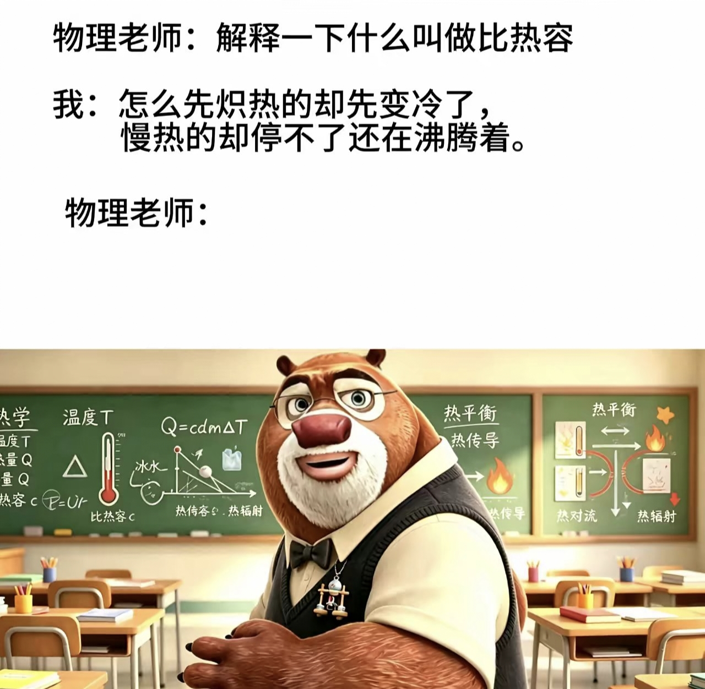

暑期专题讲解（三）
九年级物理：比热容
前言
想必各位最近在网上刷到了一个文案，文案内容是：
物理老师：“解释一下什么是热比容”
我：“怎么先炽()热的却先变冷了，慢热的却停不了还在沸腾着”

*让我们从物理学角度评析该说法是否正确。
先谈结论：
核心物理规律正确，“还在沸腾着”属于文学艺术夸张，不完全符合现实实验现象。
原理依据：
*原理依据：公式 Q=cmΔt
其中，Q 为吸收/放出的热量，c 为比热容，m 为质量，Δt 为温度变化量。
1. 比热容 c 越小，温度变化 Δt 越大。
2. 比热容 c 越大，温度变化 Δt 越小。
逐句分析：
1. “怎么先炽()热的却先变冷了” ✅ 物理正确
对应比热容小的物质。
吸热的时候温度上升很快，很容易变得炽热；不再加热向外放热时，温度下降也很快，会最先冷却。
实例：沙子、铁锅。太阳一晒沙子马上滚烫，太阳落下沙子迅速降温。
2. “慢热的却停不了还在沸腾着”
- “慢热” ✅ 物理正确：对应比热容大的物质（如水）。升高相同温度，需要吸收更多热量，升温过程缓慢。停止加热向外放热时，温度下降十分缓慢，可以长时间保持高温。
- “还在沸腾着” ❌ 不符合物理事实。
沸腾的条件：①达到沸点；②持续吸热。撤去热源之后，水无法继续吸收热量，沸腾会立刻停止，不会持续沸腾。歌词这里是文学修辞，把“长时间保持高温”夸张写成“还在沸腾”。
总结
这句话抓住了比热容的核心特点：比热容小，升温快、降温也快；比热容大，升温慢、降温也慢。
除去文学夸张的“沸腾”二字，用来比喻比热容是合理的。